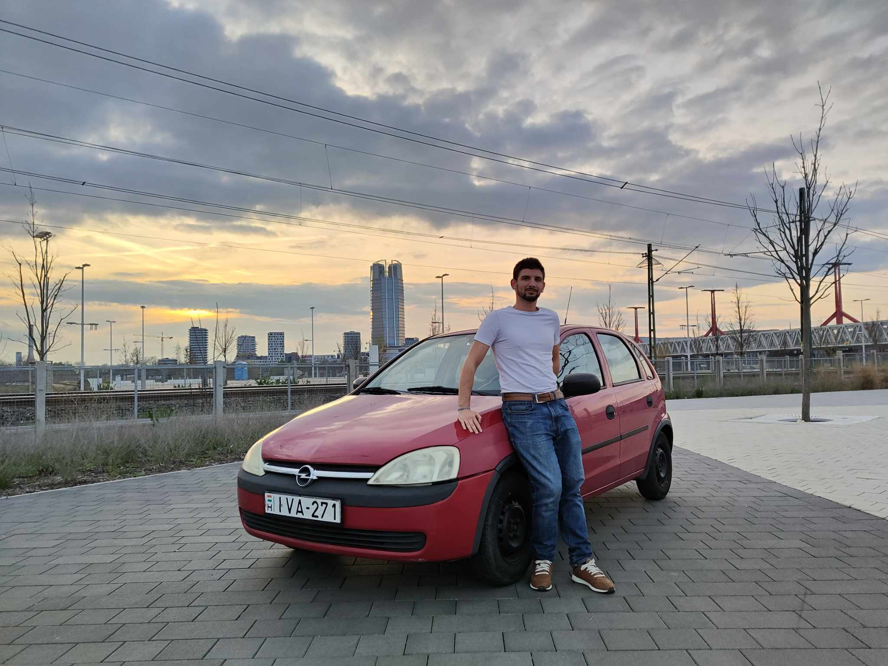

Ha nincs még autód, vagy van, de nem mered vezetni, akkor mehetünk a tűzpiros Ferrarimmal Opel Corsámmal. Ez a kocsi maga a tökéletesség az erős alapok elsajátításához:
- könnyen kezelhető, de nem "mikro" méret
- kezes, de nem lomha motor
- benzines és manuális váltós, így ezután bármilyen kombináció gyerekjáték lesz
- nincs radar, nincs kamera, nincs sávtartó, így muszáj mindent neked csinálnod
- klíma viszont van, ha megizzasztana a kihívás 😉